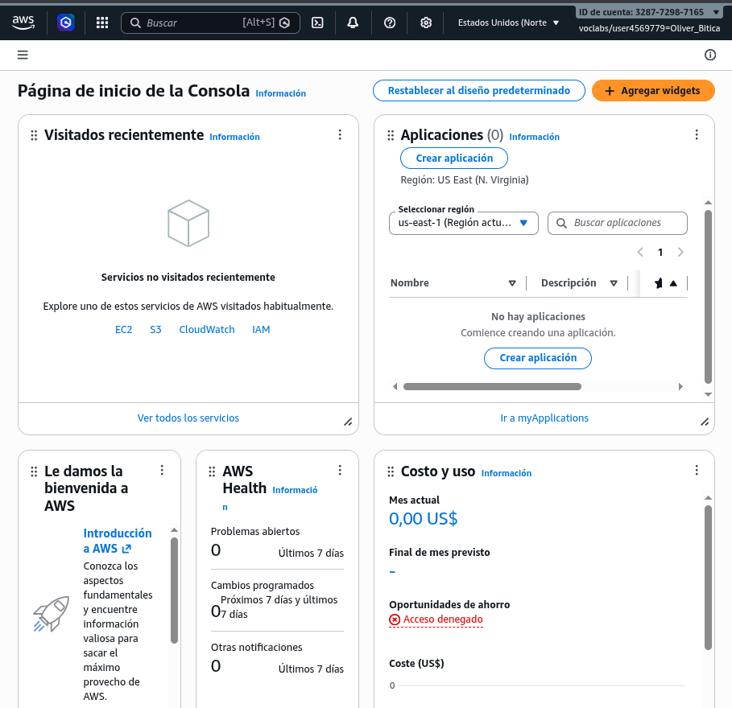
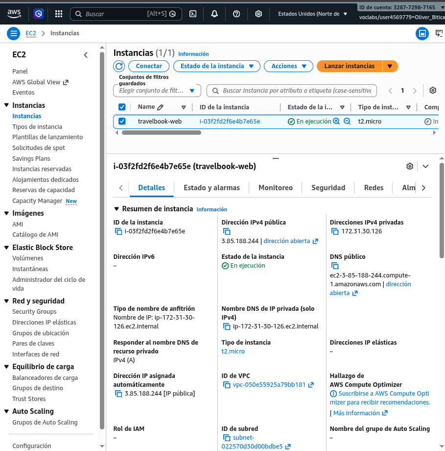
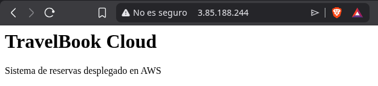
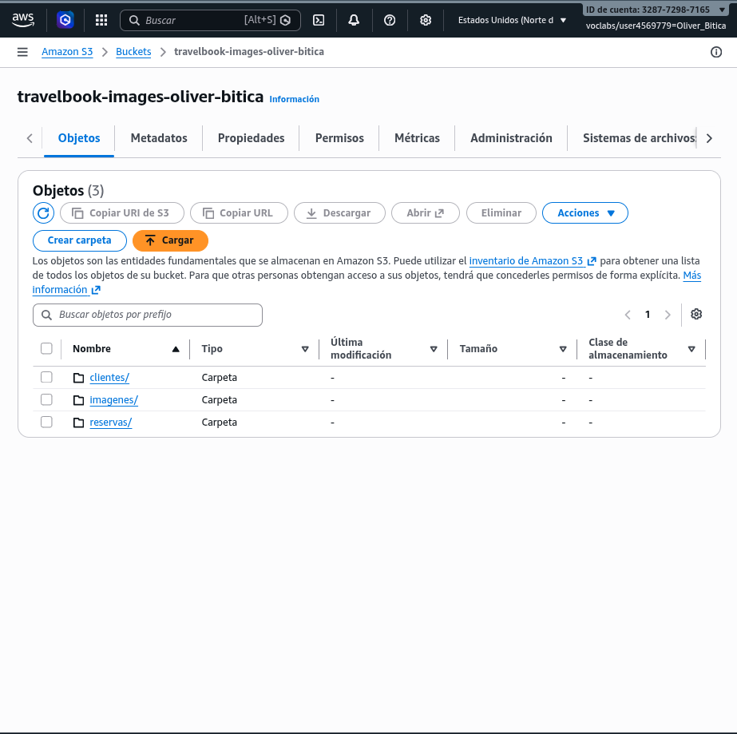
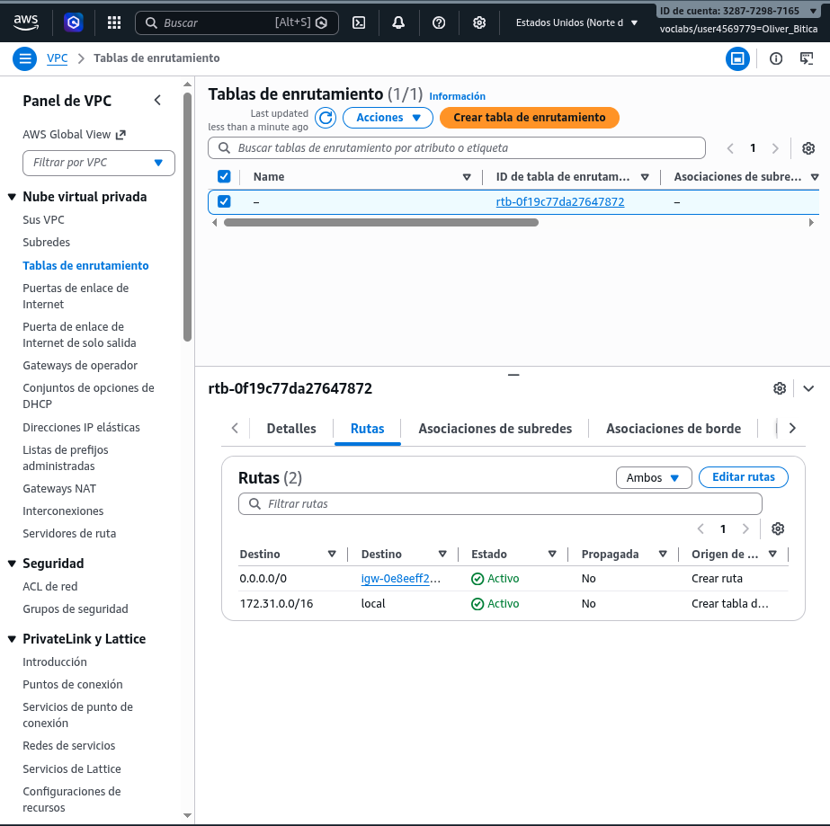
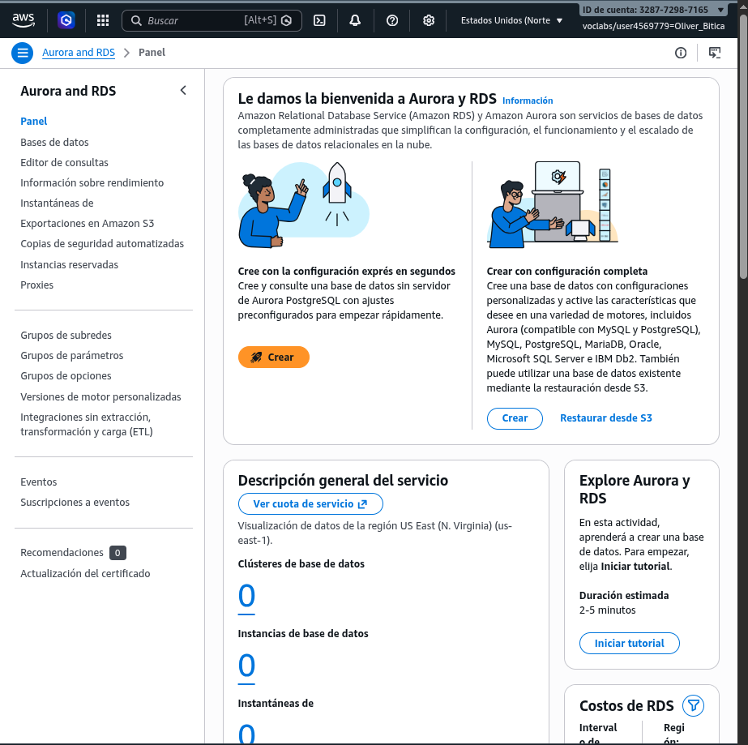
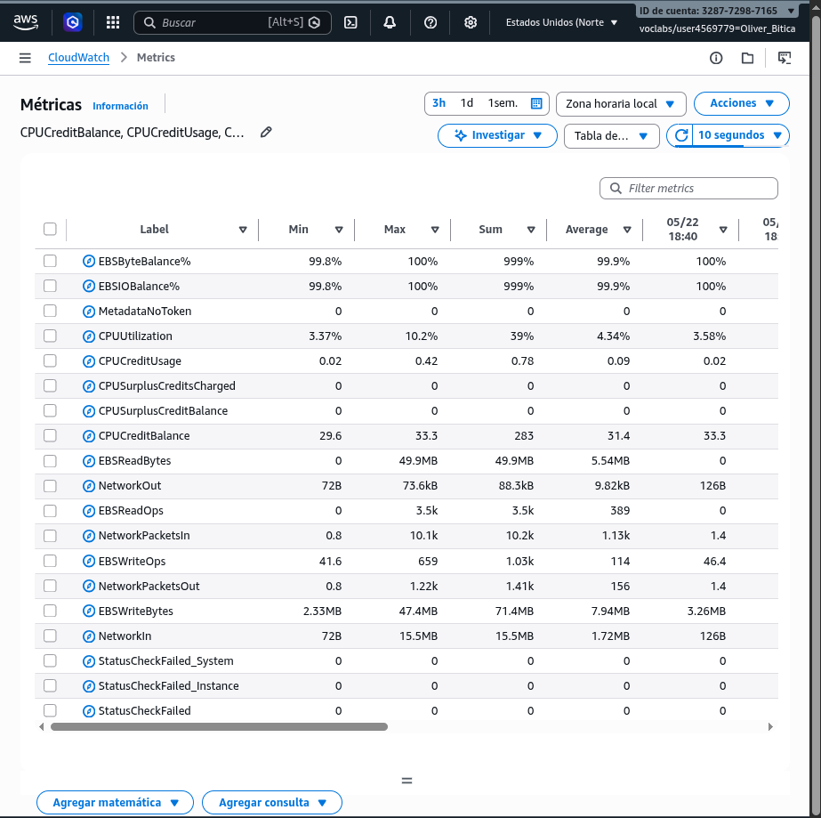
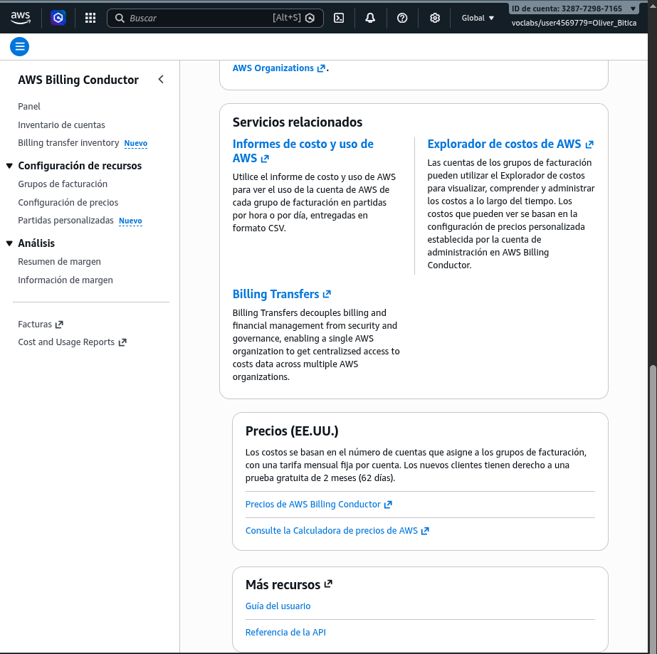
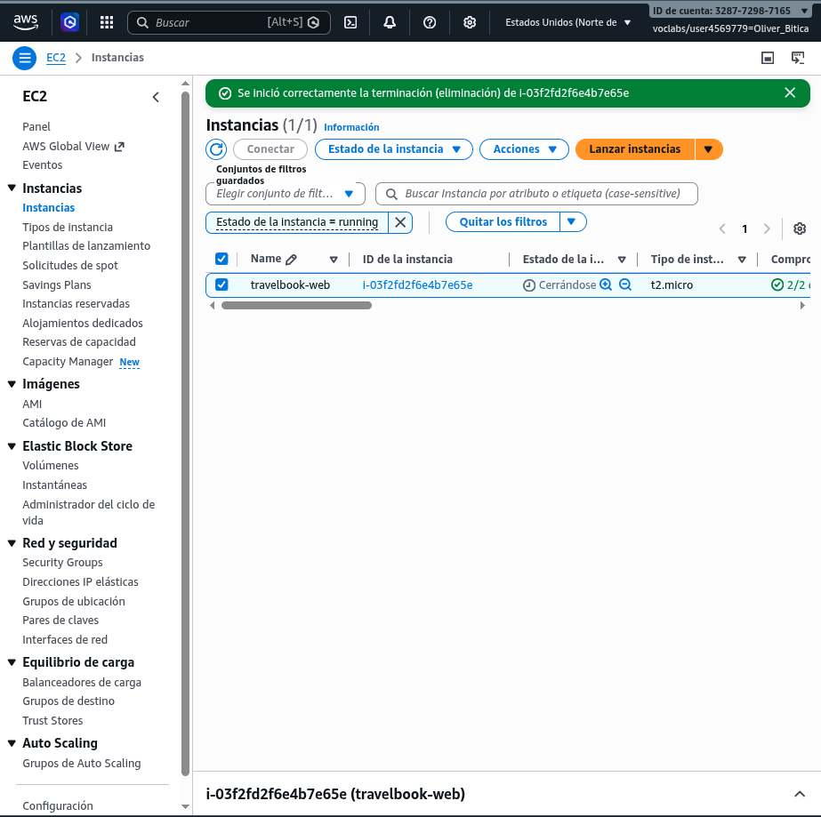
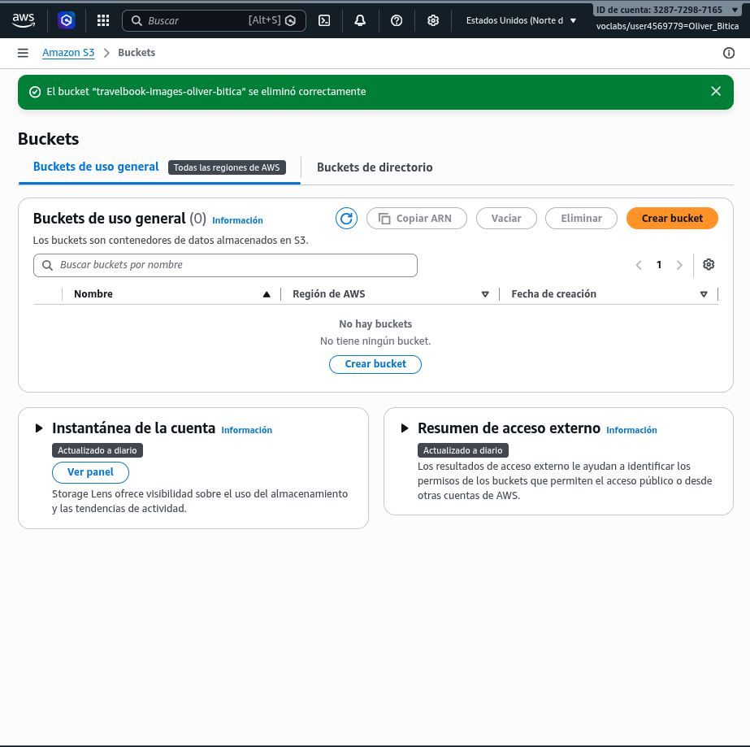

Despliegue y análisis de una infraestructura cloud completa utilizando Amazon Web Services (AWS) Learner Lab
En esta práctica el alumnado deberá desplegar y analizar una infraestructura cloud completa utilizando distintos servicios de AWS. La actividad está diseñada para repasar de forma práctica los contenidos de los módulos 1 al 10 de AWS Academy Cloud Foundations.
| Módulo | Conceptos trabajados |
|---|---|
| 1 | Introducción al Cloud Computing |
| 2 | Beneficios y modelos cloud |
| 3 | Infraestructura global AWS |
| 4 | EC2 y computación |
| 5 | VPC y networking |
| 6 | S3 y almacenamiento |
| 7 | Bases de datos y monitorización |
| 8 | Seguridad y buenas prácticas |
| 9 | Escalabilidad y alta disponibilidad |
| 10 | Optimización de costes y arquitectura |
La empresa ficticia TravelBook Cloud quiere desplegar una plataforma web para gestionar reservas de viajes. La empresa necesita:

travelbook-webt2.micro#!/bin/bash
yum update -y
yum install httpd -y
systemctl start httpd
systemctl enable httpd
echo "<h1>TravelBook Cloud</h1>" > /var/www/html/index.html
echo "<p>Sistema de reservas desplegado en AWS</p>" >> /var/www/html/index.html

travelbook-images-tu-nombre./imagenes, /clientes y /reservas.
Respuesta: Tiene espacio casi infinito para guardar archivos sin preocuparnos por comprar más discos duros físicos. Además, es mucho más seguro porque AWS replica los archivos para que no se pierdan si se rompe nuestro servidor.
Respuesta:
/imagenes: Fotos de los destinos de viaje, hoteles y paisajes para la web./clientes: Documentos importantes de los usuarios, como fotos de pasaportes o contratos./reservas: PDFs con los billetes de avión, facturas o itinerarios generados automáticamente.
0.0.0.0/0 → Internet Gateway.
Respuesta: Funciona como una puerta de enlace o puente para conectar nuestra red virtual privada (VPC) con el internet público, permitiendo el tráfico de entrada y salida.
Respuesta: Nuestro servidor web perdería la conexión con el exterior por completo. Nadie podría acceder a la página web desde sus casas y el servidor no podría descargar actualizaciones de internet.
Respuesta: La subred pública tiene una ruta directa a internet a través del Internet Gateway y sirve para alojar el servidor web. La subred privada está aislada de internet y se utiliza para bases de datos o servicios internos que no deben ser visibles desde fuera por seguridad.

Respuesta: Datos de texto que cambian rápido y necesitan estar organizados en tablas, como los nombres de usuario, contraseñas, listados de hoteles disponibles, precios y los datos de las reservas de los clientes.
Respuesta: RDS nos quita mucho trabajo porque AWS se encarga de hacer las copias de seguridad automáticas, actualizar el software y gestionar la infraestructura. No tenemos que usar la terminal del servidor ni preocuparnos si MySQL se apaga de golpe.

Respuesta: Sirve para vigilar en tiempo real cómo está funcionando nuestra infraestructura cloud (uso de CPU, red, etc.) y asegurarnos de que el servidor no está saturado ni tiene problemas.
Respuesta: Si vemos en los gráficos que la métrica de CPU está muy cerca del 100% de forma constante, o si el gráfico "Status Check Failed" sube a 1, significa que el servidor va lento o se ha colgado y no responde.
Investiga los siguientes servicios: Auto Scaling y Elastic Load Balancer.
Explica:
Respuesta: Usaría Auto Scaling para que, de forma automática, se creen más copias de nuestro servidor web si el uso de la CPU sube mucho, y que se apaguen cuando vuelva la normalidad.
Respuesta: Si solo tenemos un servidor, la máquina no dará abasto para procesar todas las peticiones, la página web se volverá extremadamente lenta y al final el servidor web se caerá, dejando a todos sin servicio.
Respuesta: Creando varios servidores web repartidos en diferentes zonas de disponibilidad físicas (centros de datos separados) y usando un balanceador de carga (ELB) para repartir el tráfico web entre ellos de forma equitativa.

Respuesta: Usando tipos de instancia muy pequeños (como la t2.micro) que se ajusten a lo que necesitamos realmente, configurando alertas de gasto para que nos avise si nos pasamos del límite y borrando los recursos de prueba que ya no usemos.
Respuesta: Apagaría las instancias EC2 y de base de datos que usemos para hacer pruebas o desarrollo durante los fines de semana y las noches, que es cuando nadie trabaja en el proyecto.
Relaciona la infraestructura creada con los pilares del marco de buena arquitectura:
Respuesta: Usamos Security Groups para abrir únicamente los puertos necesarios (80 para web y 22 para SSH) y mantener todos los demás cerrados para evitar ataques.
Respuesta: La base de datos en RDS y los archivos en S3 se guardan de forma muy segura y con copias automáticas, por lo que el sistema no perderá los datos importantes de los clientes ante un fallo de la web.
Respuesta: Utilizamos recursos de computación eficientes como instancias EC2 adaptadas a la carga del proyecto de clase, dejando las imágenes pesadas fuera del servidor web guardándolas directamente en S3.
Respuesta: Solo pagamos por lo que consumimos segundo a segundo (pago por uso) y usamos la capa gratuita de AWS (Free Tier) con máquinas t2.micro para evitar gastos innecesarios durante las pruebas.
Respuesta: Al usar la nube de AWS en lugar de tener servidores físicos encendidos en un cuarto propio, compartimos máquinas eficientes en centros de datos ecológicos, reduciendo el consumo total de electricidad.
Responde a las siguientes preguntas con base en el desarrollo de la práctica:
Respuesta: No tenemos que gastar dinero en comprar servidores físicos ni mantenerlos en una oficina. Podemos crear, apagar o modificar cualquier servidor en segundos con unos clics, pagando únicamente por el tiempo que esté encendido.
Respuesta: Amazon S3, porque es el servicio idóneo para guardar archivos estáticos pesados, es baratísimo, muy seguro y escala automáticamente sin tener que gestionar discos duros.
Respuesta: Poniendo la base de datos de RDS dentro de una subred privada para que nadie pueda atacarla desde fuera de internet, y utilizando contraseñas fuertes junto con cifrado para proteger los archivos en S3.
Respuesta: La página web se caería al instante y los clientes no podrían hacer reservas, ya que actualmente solo tenemos una máquina encargada de hacer funcionar todo el servidor web.
Respuesta: Separando el servidor web de la base de datos, usando una base de datos RDS dedicada, y configurando un balanceador de carga con Auto Scaling para añadir automáticamente más servidores web cuando haya muchos clientes conectados a la vez.
Para evitar costes innecesarios, realiza las siguientes acciones de limpieza una vez finalizada la práctica:
travelbook-web).travelbook-images-tu-nombre).
